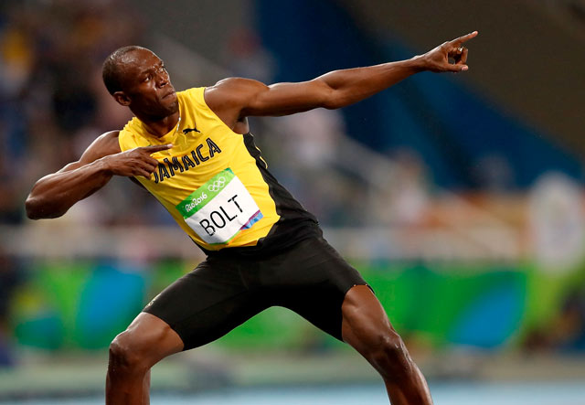

Усэйн Болт – звезда лёгкой атлетики, самый популярный представитель этого вида спорта и обладатель мирового рекорда, который он удерживает уже второй десяток лет. Болт впервые появился на летних Олимпийских играх в 2004 году. На тот момент ему было всего 18 лет, он лечил травму подколенного сухожилия, и ему даже не удалось финишировать в беге на 200 метров.
А потом он выиграл дистанции 100 и 200 метров на трёх Олимпийских играх подряд и стал, возможно, самым сильным спринтером всех времен – в его копилке восемь олимпийских медалей, собранных в 2008м, 2012м и 2016м годах. В 2017м году Усэйн Болт завершил свою спортивную карьеру.
После ухода из лёгкой атлетики спортсмен пробовал себя в профессиональной футбольной команд е в Австралии (Central Coast Mariners) и провёл с ней несколько матчей. Но футбольная карьера не удалась. Сейчас Усэйн Болт серьёзно увлечён музыкой и даже выпустил альбом.